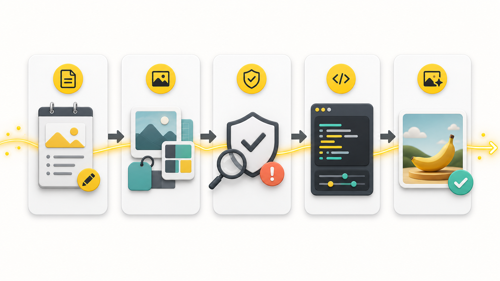
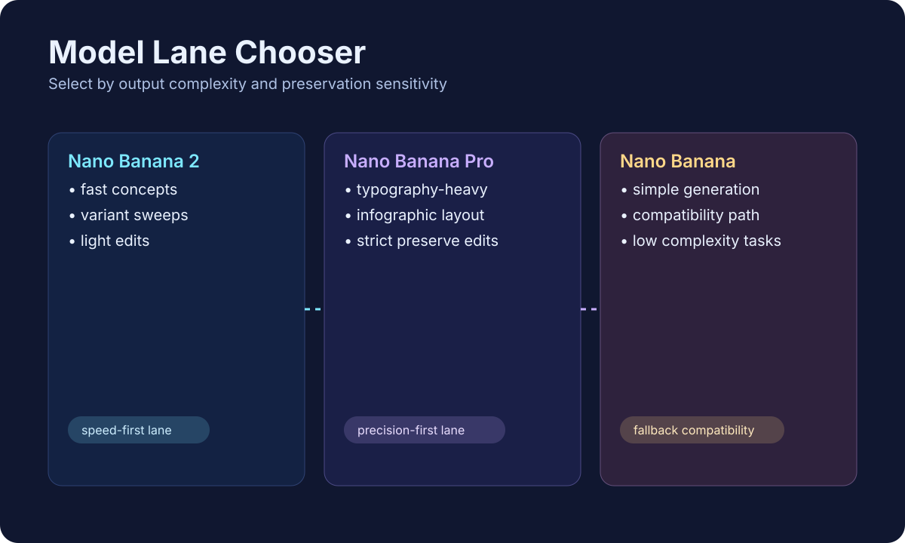

Nano Banana 2
gemini-3.1-flash-image-preview
Rapid concepts, variant sweeps, quick edit loops.
This repository turns loose art direction into grounded prompts and compact runtime JSON. It is optimized for generation, editing, continuity, typography, and model routing.
Pick the model intentionally based on complexity, typography load, and edit precision.
gemini-3.1-flash-image-preview
Rapid concepts, variant sweeps, quick edit loops.
gemini-3-pro-image-preview
Text-heavy layouts, infographics, high-fidelity preservation edits.
gemini-2.5-flash-image
Simple generation tasks and legacy fallback compatibility.
Current public Gemini image docs use generateContent with text parts, inline image data, image config, and model-specific output controls.
gemini-3-pro-image-previewgemini-3.1-flash-image-previewgemini-2.5-flash-image
python -m pip install -r requirements-dev.txt python scripts/validate_repo.py
Front-end now includes ImageGen and SVG process visuals aligned with the skill modules.


Prompts used to create the hero and workflow infographic visual direction.
Create a polished 16:9 hero image for an open-source image-generation skill. Show a cinematic AI workstation with prompt cards, reference thumbnails, schema blocks, and a subtle banana-yellow signal ribbon. No readable text.
Create a 16:9 five-stage workflow infographic: creative brief intake, reference binding, risk preflight, prompt/runtime compiler, and final output validation. Icons only, no text.
Authoring JSON and runtime JSON examples are paired for reproducible outputs.
Photoreal editorial portrait with controlled lighting and preservation-ready framing.
Readable hierarchy with movement/culture routing and text-safe composition.
Identity-preserving relight + background swap with strict delta instructions.
Use full validation when dependencies exist, and lite validation in restricted environments.
mkdir -p ~/.agents/skills ln -s /path/to/nano-banana-image-skill \ ~/.agents/skills/nano-banana-image-skill
python -m pip install -r requirements-dev.txt python scripts/validate_repo.py python scripts/validate_repo.py --lite make validate-lite
Single canonical skill logic with multi-agent entrypoints.
| Client style | Primary file | Behavior |
|---|---|---|
| Skill-aware agents | SKILL.md | Canonical entrypoint |
| AGENTS-style guidance | AGENTS.md | Repo workflow instructions |
| Claude memory | CLAUDE.md | Concise compatibility memory |
| Gemini memory | GEMINI.md | Imports canonical skill behavior |